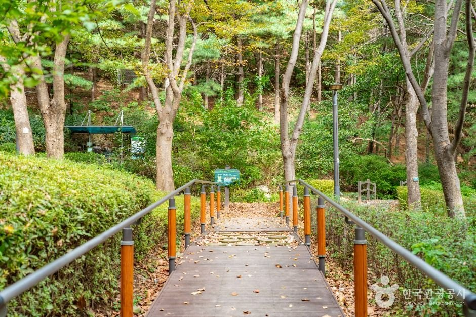
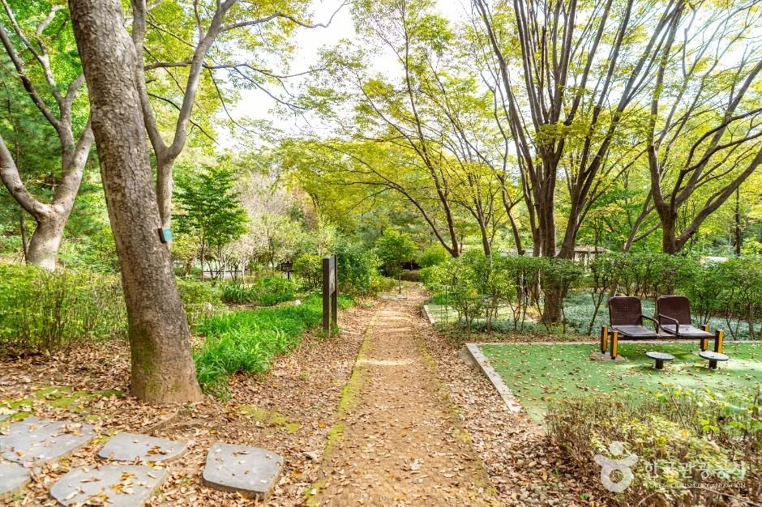
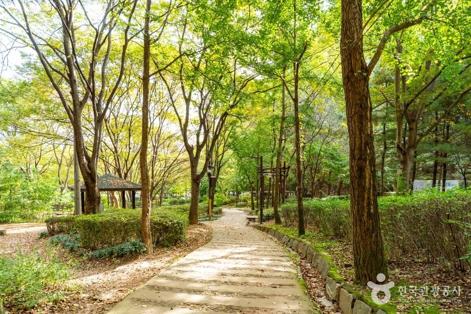
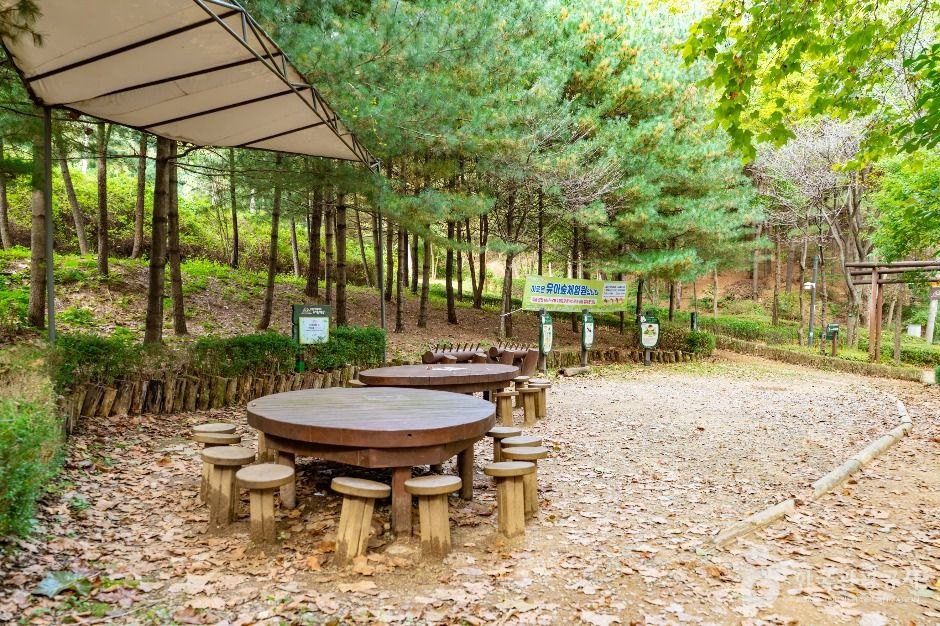
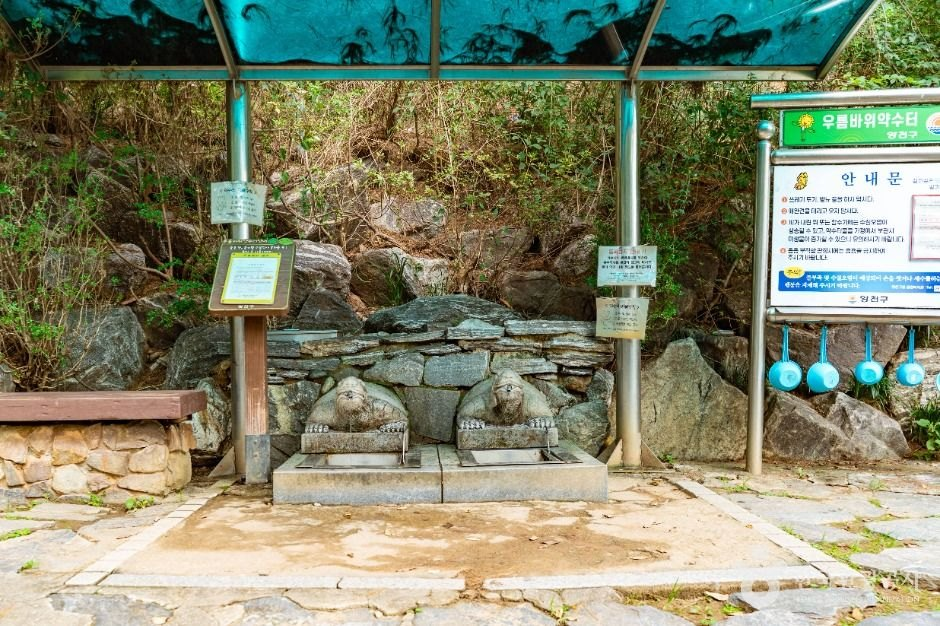

Seoul Gyenam Park Guide: Overview
This Seoul Gyenam Park guide is for travelers who want a real neighbourhood forest walk, not another palace queue. Gyenam Neighborhood Park (계남근린공원) wraps around Sinjeongsan hill in Sinjeong-dong, Yangcheon-gu, in southwest Seoul. It opened in 1971 and is where locals jog, walk the dog and take their kids into the trees.
The headline is a roughly 4 km forest loop that includes a 1,023 m barrier-free trail — rare on a Seoul hill — and LED lighting for evening walks. It is free and open around the clock, which makes it an easy add-on if you are staying in the Mokdong area.

The Barrier-Free Forest Trail and 4 km Loop
According to Korea Tourism Organization (KTO) text, the eco-friendly barrier-free trail was built to rise and fall gently through the trees, with what KTO calls a lovely autumn-foliage path. The photographs show wooden decks with handrails, packed-earth paths under tall deciduous trees and benches tucked into the woods.
The full loop is about 4 km. Expect some up-and-down outside the barrier-free section, so wear proper shoes. LED lights along the paths make an after-dinner walk feel safe — a nice option in November when it is dark by 5:30 pm.


Things to See: Ureong Rock, Spring and Kids' Forest
- Ureong Rock (우렁 바위): a boulder with a local legend that it once cried out. Because it is shaped like a cow's saddle (길마), it is also called Gilma Rock.
- Children's forest experience area (유아숲 체험장): at the start of Sinjeongsan, with ecology educators, per KTO.
- Forest library and play zones: KTO lists a forest library plus adventure, sensory, imagination and forest-experience play spaces.
- Mineral spring and outdoor stage: along with exercise equipment that the park has had since its early days.
- Forest-guide walks: the "Sinjeongsan forest trip" program pairs visitors with a forest interpreter. Confirm schedules with the district office first.


Visitor Information
| Item | Details |
|---|---|
| Name | Gyenam Neighborhood Park (계남근린공원), Sinjeongsan |
| Address | 21 Jungang-ro 17-gil, Sinjeong-dong, Yangcheon-gu, Seoul (서울특별시 양천구 중앙로17길 21) |
| Hours | Always open |
| Closed | Open every day of the year |
| Admission | No fee listed |
| Parking | Not available |
| Trails | About 4 km loop incl. 1,023 m barrier-free forest trail; LED path lights |
| Inquiries | Yangcheon-gu Office Parks & Greenery Division, 02-2620-3576 |
Sources: Korea Tourism Organization (한국관광공사) destination text. Photos © Korea Tourism Organization (KOGL Type 1). No AI-generated images. Programs and facilities can change — confirm before you go.
Getting There
Paste 계남근린공원 or 서울특별시 양천구 중앙로17길 21 into Naver Map or Kakao Map; Google Maps is weak for walking routes in Korea. The park sits in Sinjeong-dong, next to the Mokdong residential district. We do not quote a subway exit or bus number because the official listing does not give one — the map app will show the nearest stop from wherever you are staying. There is no parking, so come by public transport or taxi.
Tips for Your Visit
- Go early or late on autumn weekends. The trail gets busy at midday in foliage season.
- Bring a light layer. The forest is cooler than the streets, especially after sunset.
- Start on the barrier-free section if you are with a stroller, a wheelchair user or older relatives.
- Ask about pets and programs at 02-2620-3576 before you go; KTO does not list a pet policy.
How It Compares with Other Seoul Green Walks
| Gyenam Park (Yangcheon) | Seoul Forest (Seongdong) | Hongneung Forest (Dongdaemun) | |
|---|---|---|---|
| Feel | Local hill forest, few tourists | Big flat city park | Research arboretum |
| Accessibility | 1,023 m barrier-free trail | Mostly flat paths | Some slopes |
| Hours | Always open | Open daily | Tue–Sun daytime hours |
| Best for | Quiet forest loop, evening walk | Picnics and dogs | Tree lovers |
Who It Suits
- Great for: Families with young kids who want forest play spaces.
- Great for: Travelers staying in southwest Seoul or Mokdong who want a free green escape.
- Great for: Wheelchair and stroller users looking for a barrier-free forest section.
- Less ideal: First-time visitors with one day in Seoul — central palaces come first.
Plan Your Seoul Trip
Seoul Gyenam Park FAQ
Where is Gyenam Park?
21 Jungang-ro 17-gil, Sinjeong-dong, Yangcheon-gu, Seoul (서울특별시 양천구 중앙로17길 21). It covers the slopes of Sinjeongsan hill in southwest Seoul. Search 계남근린공원 in Naver Map or Kakao Map.
Is it open at night and does it charge admission?
Korea Tourism Organization lists it as always open, every day of the year, and gives no admission fee. LED lights along the forest trail are installed for safer evening walks.
Is it wheelchair and stroller friendly?
Partly. The park has a 1,023 m barrier-free forest trail within a roughly 4 km loop. The rest of the loop goes up and down, so plan your route around the barrier-free section.
Is there parking?
No. KTO lists parking as not available, so take public transport and use a map app for the final walk.
Who do I contact for programs?
Yangcheon-gu Office Parks and Greenery Division, 02-2620-3576 (as listed by KTO). Ask about the forest-guide program and the children's forest experience area before you visit.